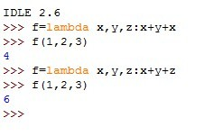

关于装饰器、lambda、鸭子类型、魔法函数的理解仍存有困惑之处，趁周末有时间温故，赶紧去自学了解下相关知识。
1.装饰器是什么：
很多初学者在接触装饰器的时候只做到了肤浅的了解它的概念、组成形态。实际上装饰器是python学习中很难啃的大骨头，一旦涉及到具体用途以及原理，经常会把人绕晕。
在这里，我们需要明确的一点是：装饰器并不是加速器。装饰器的作用仅仅是为了封装一个函数，使其增加原有的函数功能，却不改变其调用方式。
而装饰器往往需要具有三大要素：1把想加入的函数C作为参数传入函数A 2.在函数A里面嵌套一个函数B，并在B函数里面调用函数C 3.在函数A里面把函数B作为返回值返回
具体结构： def A(C):
def B():
C()
return B
@A
def foo():
cdsvhoush
foo()
像这样直接调用foo函数，实际上就是把foo作为参数传入了装饰函数A中，实现函数功能更好的复用。而把函数作为参数使用是python特有的一种用法。
2.在类中使用装饰器：
装饰器不仅可以是函数，还可以是类，相比函数装饰器，类装饰器具有灵活度大、高内聚、封装性等优点。
。。。
3.有关lambda函数的用法
lambda的主体是一个表达式，而不是一个代码块。仅仅能在lambda表达式中封装有限的逻辑进去。
lambda表达式是起到一个函数速写的作用。允许在代码内嵌入一个函数的定义。
如下，是lambda函数中的一个常见用法。先忽略下一行不看，光看上一行是不是觉得难以理解？其实，lambda只是一个表达式，函数体比define简单很多。下一行用刚刚命名的f来调用lambda的时候，是不是现在就觉得亲切不少？

lambda x，y：x-y ————lambda后面的内容是输入值，：后的含义是进行的运算规则及返回值。 lambda是可以赋值给一个变量的
4. 将lambda函数作为参数传递给其他函数。（注：lambda的常见高能用法，以下是本人在CSDN上摘抄大佬所整理的部分）
部分Python内置函数接收函数作为参数。典型的此类内置函数有这些。
（1）filter函数。此时lambda函数用于指定过滤列表元素的条件。例如filter(lambda x: x % 3 == 0, [1, 2, 3])指定将列表[1,2,3]中能够被3整除的元素过滤出来，其结果是[3]。
（2）sorted函数。此时lambda函数用于指定对列表中所有元素进行排序的准则。例如sorted([1, 2, 3, 4, 5, 6, 7, 8, 9], key=lambda x: abs(5-x))将列表[1, 2, 3, 4, 5, 6, 7, 8, 9]按照元素与5距离从小到大进行排序，其结果是[5, 4, 6, 3, 7, 2, 8, 1, 9]。
##我们做过的学生信息查询系统的排序功能时就用到了sorted方法，里面就调用了lambda函数!!
（3）map函数。此时lambda函数用于指定对列表中每一个元素的共同操作。例如map(lambda x: x+1, [1, 2,3])将列表[1, 2, 3]中的元素分别加1，其结果[2, 3, 4]。
（4）reduce函数。此时lambda函数用于指定列表中两两相邻元素的结合条件。例如reduce(lambda a, b: '{}, {}'.format(a, b), [1, 2, 3, 4, 5, 6, 7, 8, 9])将列表 [1, 2, 3, 4, 5, 6, 7, 8, 9]中的元素从左往右两两以逗号分隔的字符的形式依次结合起来，其结果是'1, 2, 3, 4, 5, 6, 7, 8, 9'。
5.鸭子类型 ：
首先，让我们先回顾一下多态是什么：
当同一个变量在调用同一个方法时，完全可能呈现出多种行为（具体呈现出哪种行为由该变量所引用的对象来决定），这就是所谓的多态（Polymorphism）。
“鸭子类型”的语言是这么推断的：一只鸟走起来像鸭子、游起泳来像鸭子、叫起来也像鸭子，那它就可以被当做鸭子。也就是说，它不关注对象的类型，而是关注对象具有的行为(方法)。
魔法函数：
先来介绍几个python常用魔法函数。
所有类的超类object，有一个默认包含pass的__init__()实现，这个函数会在对象初始化的时候调用，我们可以选择实现，也可以选择不实现，一般建议是实现的，不实现对象属性就不会被初始化，虽然我们仍然可以对其进行赋值
直接打印对象的实现方法，__str__是被print函数调用的，一般都是return一个什么东西，这个东西应该是以字符串的形式表现的。如果不是要用str()函数转换，我们可以直接print的对象都是实现了__str__这个方法的，比如dict
在object类中存在一个静态的__new__(cls, *args, **kwargs)方法，该方法需要传递一个参数cls，cls表示需要实例化的类，此参数在实例化时由Python解释器自动提供，__new__方法必须有返回值，且返回的是被实例化的实例，只有在该实例返回后才会调用__init__来进行初始化，初始化所用的实例就是__new__返回的结果，也就可以认为是self。
判断对象中是否存在字符串中名字的方法，返回值为False或True。
得到对象中对应字符串中名字的方法（前提是经上述hasattr判断，要先存在这样的方法，才可得到）
把对象的属性值赋给a = __setattr__(...,...,...)
好，现在知识点回顾完毕，现在是第三周的编程刚刚结束，说一下我近期的感受吧。
刚学完基础语法的时候，发现解决每个问题的难点都在于：把之前固有的解决问题的思路转化为编程语言来描述。也许这是每个初学一门语言的人都要经历的过程，但后来我发现，知识都是死的，但具体怎么解决，是要靠强大的逻辑去支撑的。还有就是，要学会经常复盘。对于做过的每道题题，解决的每个项目，当时觉得做出来很轻松，但当敲过更多的代码，学过更多的知识过后，你需要去思考：我还可以有更好的办法让这个程序代码行数更少。在学完面向对象以后，我个人的强大感受是：整个世界的运转都离不开类和对象。每个实例的不同表现形式是面向对象的多态性、子类就是父类、但是子类可以实现自己定义的多种功能...更神奇的还有，如何把之前做过的每道题用“类和对象”的思路去完成。其实，处理一个问题、或者是大的项目，难点就在于其设计思路的复杂、多样性。解决一个问题之前，应该首先思考的是它的数据存放类型、数据处理模型，一定要首先先思考它的可行性，再去进一步搭框架（不然的话世界上就没那么多程序员想揍产品经理了），之前在做数独这个项目的时候，说句实话我的大脑一片空白。直到老师指导我，细化的告诉我这些数据该怎么存放，具体程序执行的大致流程，我的思路才清晰了一些，才得以独立完成这个项目。
俗话说，师傅领进门，修行在个人，别人只能帮你解决一个小bug，不可能一直帮你。如何做到活学活用，则要看你敲过的代码行数、你解决过的问题、你自己实现出来的每个项目。当然，积累的越多，收获越大。如何打破自己原有的世界观，进入新的代码天地，需要走上一阵子了。
实现很容易，设计可一点儿都不简单，因为只有实现过的人才懂得如何去设计，以及这样做可不可以。所以我的建议是，对于初学者，不要每道题解不出就哭爹喊娘不干了，一定要坚持独立思考这个过程，直到实在想不出再去求助别人，不为别的，只有这样做才会有效果。世界上绝大多数难题都是举一反三，老话说，就是“照葫芦画瓢”。同样的南墙，先撞一次，下次再遇到就是老朋友了。我无法描述独立解决一道问题的快感，我只知道，看不见报错提示、也没有逻辑错误的程序跑出来的那一瞬间，我坐在电脑前的5个小时、8个小时、甚至15个小时都值得，仅仅因为：这些知识已经变成我的武器了。
最后一句话送给像娜娜酱1999一样迷茫的人：学而不思则罔，思而不学则殆。最坏的结果不过是大器晚成。❤
（整理不易，请各位客官点个赞再走呗(#^.^#)）